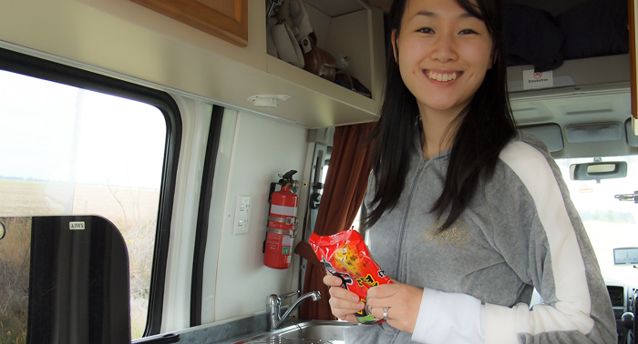
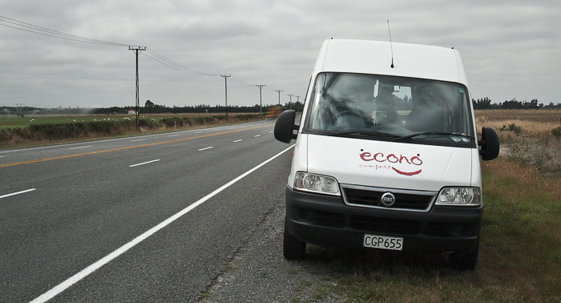
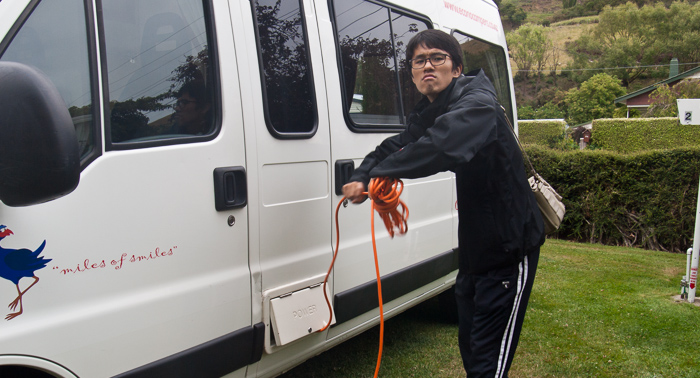
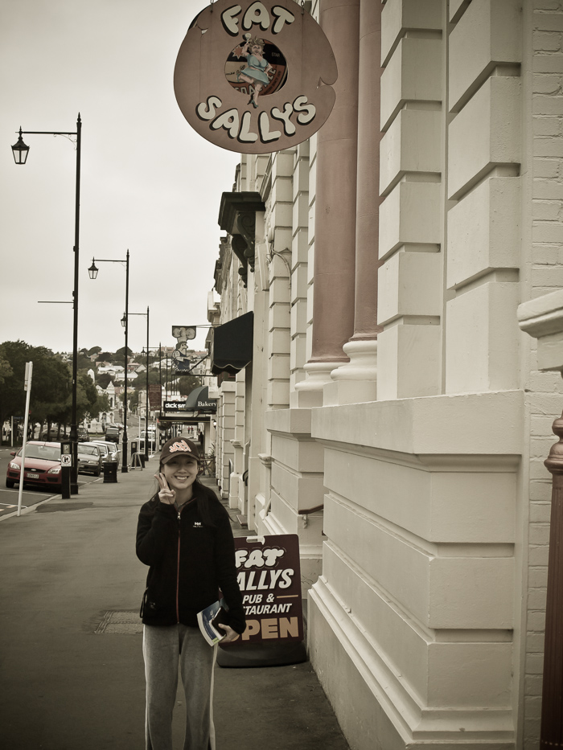

크라이스트처치에 도착해서 오아마루로
아침 9시 반에 크라이스트처치 공항에 도착했습니다. 입국 심사를 받는데 immigrate officer가 저를 따로 불러서 검사하더군요. 비행기에서 내려서 서둘러서 제 앞엔 10명도 없었는데 열외 되는 바람에 마지막 사람이 빠져나간 후 한참 뒤에야 나올 수 있었습니다. 이유를 물어봤더니, 나와 같은 이름이고 생년월일이 다른 사람이 DB에 남아 있어서라고 하더군요. 제 앞에 기다리던 일본 여자는 "too many travel" 때문이라고 한 것으로 봐서 저도 비슷한 이유이지 않을까 생각합니다.
사실 최근 몇 년간 여권에 출입국 도장이 많이 찍히긴 했습니다. 복을 많이 받은 덕분인지, 여건이 좋지 않았음에도 이 나라 저 나라 돌아다닐 수 있었습니다. 지금 생각하면 좀 더 돌아다니고 더 많이 움직여야 했었다는 생각도 들지만, 그래도 많은 경험을 쌓을 수 있어서 나름 나쁘지는 않습니다.
우여곡절 끝에 비상식량으로 한국에서 쟁여온 육포도 뺏기고 10시 50분이 되어서야 캠퍼밴을 예약한 United Campervan에 도착할 수 있었습니다. 우리 부부가 빌린 캠퍼밴은 샤워할 수 있는 시설과 화장실이 있는 캠퍼밴 중 가장 저렴한 것입니다. 하루에 뉴질랜드 달러로 160달러로 아마도 구할 수 있는 캠퍼밴 중 가장 쌀 겁니다. 보험 추가하고, GPS1를 추가하니 177달러에 빌린 셈이 되었지만 그래도 여전히 쌉니다.
뉴질랜드는 우리나라와 교통 방향이 반대입니다. 차는 왼쪽으로 다니고 운전석은 차의 오른쪽에 있습니다. 기어 또한 운전석의 왼쪽에 있어서 왼손으로 기어를 조절해야 합니다. 제가 운전병이긴 했지만 새로운 환경에 좌우가 반대인 도로를 운전해야 했기에 조심조심 운전할 수밖에 없었습니다.
대형 할인점 'PAK n SAVE'에서 간단히 먹을 것을 산 후 곧바로 오늘의 목적지인 오아마루로 향합니다. 1 Highway를 타고 갔는데, 1번 고속도로라면 그래도 제일 좋은 도로일 텐데 어찌 된 일인지 고속도로가 왕복 2차선입니다. 힘도 별로 없고 무거운 제 캠핑카가 느리게 가면 뒤차들은 앞지르기 구간(Passing Lane)이 나오기 전까지는 그냥 따라옵니다. 앞지르기 구간이 아닌 곳에서는 절대 앞지르기를 하지 않았습니다. 뒤에 따라오는 컨버터블 스포츠카도 느긋하게 운전하는 모습을 보았습니다. 이런 부분에서 뉴질랜드의 준법의식을 느낄 수 있었습니다.
 
Ashburton을 지나니 점심시간이 훌쩍 지나버렸습니다. 길가에 차를 세우고 라면을 끓입니다. 뉴질랜드에서의 첫날, 첫 음식을 한국적인 라면으로 해결하는 게 조금은 이상했을지도 모르겠지만, 그때 우리는 그 라면이 비행기 기내식으로 속에 쌓인 느끼함을 한 방에 날려주는 고마운 점심이었습니다. '이런 것이 캠핑카의 매력이 아닐까?'라는 생각이 들었네요. 원할 때 쉬고, 먹고 싶을 때 먹고, 자고 싶을 때 잘 수 있는 자유를 누릴 수 있는 이 매력.
Timaru를 지나기 전까지는 해안도로였음에도 바다는 보이지 않았습니다. GPS 지도 상으로는 바로 옆이 바다로 표시되는데도 파도 소리도 들리지 않고 그냥 길만 계속 펼쳐지고 있었습니다. 그러나 이 풍경은 티마루를 지나자마자 바뀌었습니다. 멋진 태평양이 왼쪽으로 펼쳐집니다. 이렇게 멋진 파도가 치는, 광활한 바다를 언제 보았을까. 바다는 대지를 울리는 소리를 내며 해안을 잘게 부수고 있었습니다. 그런 맹렬함 때문인지, 해안은 절벽으로 이루어져 있었습니다. 바다를 가까이 보기 위해선 절벽 사이에 난 좁은 길로 내려가야만 했습니다.
좁은 길을 통해 내려간 그곳은 거센 파도가 치는 태평양 그대로를 보여주고 있었습니다. 앞에는 바다밖에 보이지 않고 섬은 없는 끝없는 수평선만 있는 바다였습니다. 파도가 부서지는 소리도 귀를 찢어놓을 듯 거세고 바람도 매섭게 부는 바다, 이렇게 탁 트인 바다를 보고 있으니 새삼 여행을 온 기분이 듭니다. 지명도 알 수 없는, 그저 길을 달려가다 멈춘 곳에 멋들어진 풍경이 마음에 쏙 듭니다. 그때 당시는 그곳은 그냥 스쳐 가는 곳이어서 이름조차 몰랐지만, 나중에 그 지역을 찾아보니 Pareora 지명을 가진 곳입니다.

도쿄 나리타를 들러서 온, 하루가 넘는 기나긴 강행군 탓에 오아마루에 도착할 즈음엔 눈꺼풀이 그 무게를 이기질 못할 지경이 되어버렸습니다. 간신히 오아마루에 도착해 [Holiday Park][]에 자리를 잡았습니다. 저녁이 되어서 배는 많이 고팠는데 움직이기는 정말 싫었을 만큼 피곤했습니다. 오랜 시간 이동하면서 제대로 쉬지도 못해서 피곤했습니다. 겨우 몸을 움직여 reception에 물어 Fat Sally's 음식점을 추천받고 가보았습니다. 요리 두 개를 시켰다가 그 양에 놀라고, 그 느끼함에 또 한 번 놀랐습니다. 웬만큼 캐나다 음식으로 다져진 저에게도 견디기 어려울 만큼 느끼한 Pork Rib 요리였습니다. 결국, 치킨샐러드로만 배를 채우고 갈비는 건들지도 못하고 그대로 돌아왔습니다. 맛있다는 말에 기대하고 갔는데 실망해서 앞으로의 먹거리가 걱정되는 순간입니다.

밤이 한참 지났음에도, 한여름 탓인지 주변은 밝습니다. 스무 시간 전만 해도 두꺼운 외투를 입고 추위에 떨고 있었지만, 뉴질랜드는 선선한 날씨의 한여름입니다. 여름치고는 밤에 서늘하다고 느낄 정도로 독특한 여름입니다. 캠핑카에서 잠을 자기가 쉽지 않을 줄 알았는데, 막상 캠핑카의 좌석을 이리 옮기고 저리 옮기고 이부자리를 펼치니 멋들어진 침대가 됩니다. 뒤쪽 문만 열면 바로 하늘에 무수히 떠있는 별을 보면서 잘 수 있는 멋진 간이침대로 변합니다.
별이 정말 마음에 듭니다. 도시지만 사람이 적게 사는 덕분인지 별은 정말 많이 보입니다. 쌍안경이라도 있었으면 정말 제대로 별을 볼 수 있었을 텐데 아쉬움이 남는 밤하늘입니다. 한국에서는 이미 별빛을 잃어버린 지 오래입니다. 도시에서 별은 밝은 별이나 조금 보이고 북두칠성도 이젠 보이지 않습니다. 어릴 때에는 새벽에 일어나면 그래도 몇몇 별자리는 보였습니다. 그러나 이젠 새벽에도 제대로 된 별자리를 구분하기 어려울 정도로 별은 그 힘을 잃어버렸습니다. 그렇게 별이 힘을 잃어가면서 저도 별을 잊어버렸습니다. 그러나 뉴질랜드에서 보는 별은 다시 어릴 적 기억을 떠올리게 하는 별이었습니다.
쉽사리 잠들지 못할 것 같았던 신혼여행의 첫날은 눕자마자 잠이 들어버린 우리 부부의 숨소리만큼 가볍게 지나갔습니다.
-
뉴질랜드에서는 한국에서 흔히 부르는 내비게이션이라 부르지 않고 GPS라고 부릅니다. ↩